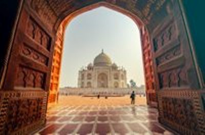

THE GREAT WALL OF CHINA

The Great Wall of China is the collective name of a series of fortification systems generally built across the historical northern borders of China to protect and consolidate territories of Chinese states and empires against various nomadic groups of the steppe and their polities.
THE CHRIST THE REDEEMER
Christ the Redeemer is an Art Deco statue of Jesus Christ in Rio de Janeiro, Brazil, created by French sculptor Paul Landowski and built by Brazilian engineer Heitor da Silva Costa, in collaboration with French engineer Albert Caquot. Romanian sculptor Gheorghe Leonida fashioned the face.

THE MACHU PICCHU

The Great Wall of China is the collective name of a series of fortification systems generally built across the historical northern borders of China to protect and consolidate territories of Chinese states and empires against various nomadic groups of the steppe and their polities.
THE CHICHEN ITZA
Chichén Itzá is a complex of Mayan ruins on Mexico's Yucatán Peninsula. A massive step pyramid, known as El Castillo or Temple of Kukulcan, dominates the ancient city, which thrived from around 600 A.D. to the 1200s. Graphic stone carvings survive at structures like the ball court, Temple of the Warriors and the Wall of the Skulls. Nightly sound-and-light shows illuminate the buildings'sophisticated geometry.

THE ROMON COLOSSEUM

The Colosseum or Coliseum, also known as the Flavian Amphitheatre, is an oval amphitheatre in the centre of the city of Rome, Italy. Built of travertine limestone, tuff, and brick-faced concrete, it was the largest amphitheatre ever built at the time and held 50,000 to 80,000 spectators
THE TAJ MAHAL
The Taj Mahal is an ivory-white marble mausoleum on the south bank of the Yamuna river in the Indian city of Agra. It was commissioned in 1632 by the Mughal emperor Shah Jahan to house the tomb of his favourite wife, Mumtaz Mahal; it also houses the tomb of Shah Jahan himself
THE PETRA

Petra is a famous archaeological site in Jordan's southwestern desert. Dating to around 300 B.C., it was the capital of the Nabatean Kingdom. Accessed via a narrow canyon called Al Siq, it contains tombs and temples carved into pink sandstone cliffs, earning its nickname, the "Rose City." Perhaps its most famous structure is 45m-high Al Khazneh, a temple with an ornate, Greek-style facade, and known as The Treasury.